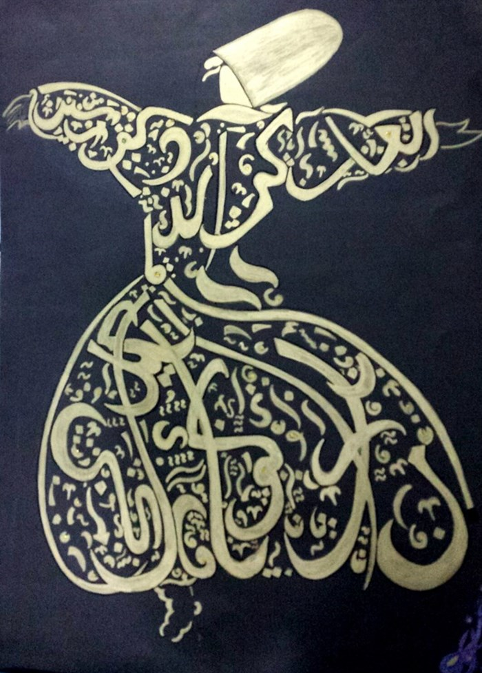
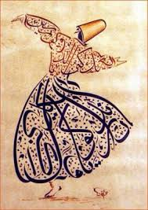
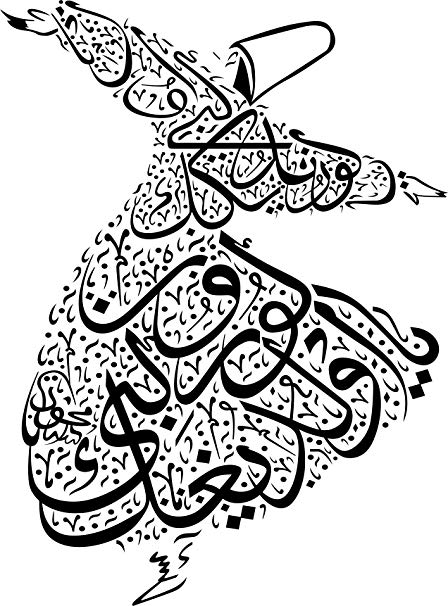

Definition: Self
Nafs (نَفْس) is an Arabic word occurring in the Quran, literally
meaning "self", and has been translated as "psyche", "ego" or "soul".
In the Quran, the word is used in both the individualistic (verse 2:48)
and collective sense (verse 4:1), indicating that although humanity is
united in possessing the positive qualities of a nafs, they are
individually responsible for exercising the agencies of the
"free will" that it provides them.
Much of the popular literature on nafs, however, is focused on the
Sufi conceptions of the term. According to the Sufi philosophies, the
nafs in its unrefined state is "the ego", which they consider to be
the lowest dimension of a person's inward existence — his animal and
Satanic nature.[3] Nafs is an important concept in the Islamic t
radition, especially within Sufism and the discipline of gnosis
(irfan) in Shia Islam.
There are seven major states of Self.
Within each states there are multiple stages/ states of the self. However,
the the sake of this length we will not be going over those stages
In the next few pages we'll go over the seven (7) states of the Self and its journey.